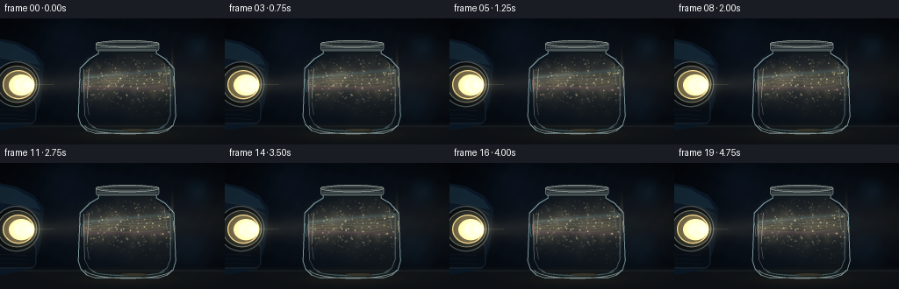
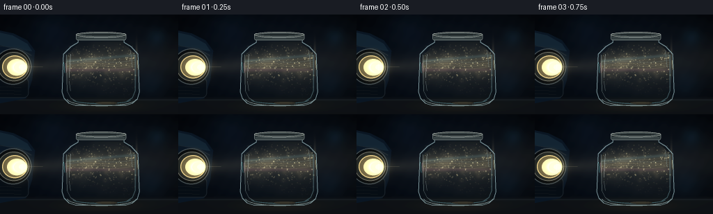

CODING AGENTS AS PIXEL WORLD MODELS
traex/GPT-5.6-Sol · phygen_048
点击播放 · 原生 RGB 像素
逐轮保存的候选
回放视频、检查图与代码变化。
每份候选均可单独播放。实际图片检查记录在下方工具轨迹中。
候选 01播放与检查图
点击播放 · 原生 RGB 像素


展开代码变化
--- 上一保存版本
+++ 本次保存版本
@@ -0,0 +1,342 @@
+"""Procedurally render a headlight beam passing through dusty air in a jar.
+
+The renderer is deterministic and uses only numpy/Pillow/OpenCV. It works at
+3x resolution and downsamples each frame for clean glass edges and tiny motes.
+"""
+from pathlib import Path
+
+import cv2
+import numpy as np
+from PIL import Image, ImageDraw, ImageFilter
+
+import artifact_io
+
+
+W, H, N, FPS = 256, 144, 20, 4.0
+SS = 3
+RW, RH = W * SS, H * SS
+ROOT = Path(__file__).resolve().parent
+RNG = np.random.default_rng(481205)
+
+
+def sc(v):
+ return int(round(v * SS))
+
+
+def rgba_layer():
+ return Image.new("RGBA", (RW, RH), (0, 0, 0, 0))
+
+
+def over(base, layer):
+ """Alpha composite a Pillow RGBA image over a floating RGB image."""
+ a = np.asarray(layer, dtype=np.float32) / 255.0
+ alpha = a[..., 3:4]
+ return base * (1.0 - alpha) + a[..., :3] * 255.0 * alpha
+
+
+def add_glow(base, mask, color, strength=1.0):
+ a = np.asarray(mask, dtype=np.float32)[..., None] / 255.0
+ return base + a * np.asarray(color, np.float32) * strength
+
+
+def make_static_assets():
+ # Jar interior and outer silhouette masks.
+ jar = Image.new("L", (RW, RH), 0)
+ d = ImageDraw.Draw(jar)
+ outer = [(112, 36), (178, 36), (178, 40), (188, 46), (198, 57),
+ (200, 112), (197, 122), (190, 128), (181, 131), (108, 131),
+ (99, 128), (92, 121), (89, 112), (91, 57), (102, 46),
+ (112, 40)]
+ d.polygon([(sc(x), sc(y)) for x, y in outer], fill=255)
+ d.ellipse((sc(89), sc(103), sc(200), sc(132)), fill=255)
+ # Keep the shoulder shape after adding the bottom ellipse.
+
+ inner = Image.new("L", (RW, RH), 0)
+ di = ImageDraw.Draw(inner)
+ inside = [(113, 39), (177, 39), (177, 42), (186, 49), (194, 58),
+ (195, 112), (191, 121), (182, 126), (108, 126), (100, 121),
+ (95, 112), (96, 59), (105, 49), (113, 42)]
+ di.polygon([(sc(x), sc(y)) for x, y in inside], fill=255)
+ di.ellipse((sc(96), sc(104), sc(195), sc(128)), fill=255)
+
+ # A subtle, blurred mask just beyond the jar for glass bloom.
+ jar_soft = jar.filter(ImageFilter.GaussianBlur(sc(1.2)))
+ return np.asarray(jar, np.float32) / 255.0, np.asarray(inner, np.float32) / 255.0, jar_soft
+
+
+JAR_MASK, INNER_MASK, JAR_SOFT = make_static_assets()
+
+# Stable dust population. Particles retain identity and drift gently.
+P_COUNT = 430
+PX = RNG.uniform(97, 194, P_COUNT)
+PY = RNG.uniform(43, 124, P_COUNT)
+PZ = RNG.uniform(0, 1, P_COUNT)
+PR = RNG.uniform(0.18, 0.74, P_COUNT) * (0.7 + 0.8 * PZ)
+PB = RNG.uniform(0.40, 1.0, P_COUNT) ** 1.7
+PP = RNG.uniform(0, 2 * np.pi, P_COUNT)
+PD = RNG.choice([-1.0, 1.0], P_COUNT)
+
+# A few soft foreground grains provide depth of field.
+BOK_X = RNG.uniform(101, 190, 19)
+BOK_Y = RNG.uniform(49, 119, 19)
+BOK_R = RNG.uniform(1.0, 2.4, 19)
+BOK_P = RNG.uniform(0, 2 * np.pi, 19)
+
+
+def render_background(t):
+ yy, xx = np.mgrid[0:RH, 0:RW].astype(np.float32)
+ x, y = xx / SS, yy / SS
+
+ # Cool, almost black garage. A broad headlight spill softly reveals wall.
+ radial = np.exp(-(((x - 144) / 150) ** 2 + ((y - 72) / 92) ** 2))
+ vignette = np.clip(1.0 - 0.42 * (((x - 128) / 150) ** 2 + ((y - 72) / 95) ** 2), .45, 1)
+ base = np.zeros((RH, RW, 3), np.float32)
+ base[..., 0] = (3.5 + 4.2 * radial) * vignette
+ base[..., 1] = (7.0 + 6.8 * radial) * vignette
+ base[..., 2] = (12.0 + 10.5 * radial) * vignette
+
+ # Fixed fine film grain, deliberately very subtle.
+ grain = (np.sin(xx * .121 + yy * .071) + np.sin(xx * .033 - yy * .097)) * .32
+ base += grain[..., None]
+
+ # Dark workbench with a slightly glossy top and reflected warm beam.
+ bench = np.clip((y - 118) / 5.0, 0, 1)
+ bench_col = np.stack([10.5 + 3 * (1-y/H), 13.5 + 3 * (1-y/H),
+ 16.5 + 4 * (1-y/H)], axis=-1)
+ base = base * (1 - bench[..., None]) + bench_col * bench[..., None]
+ seam = np.exp(-((y - 123.0) / 0.8) ** 2)[..., None]
+ base += seam * np.array([9, 11, 12], np.float32)
+ reflection = np.exp(-((x - 146) / 54) ** 2) * np.exp(-((y - 132) / 8) ** 2)
+ base += reflection[..., None] * np.array([12, 9, 4], np.float32)
+
+ # Distant, defocused wall lights for photographic depth.
+ for bx, by, rad, col in [(225, 33, 9, (3, 10, 14)), (218, 99, 13, (2, 6, 9)),
+ (73, 21, 18, (2, 5, 8))]:
+ g = np.exp(-((x-bx)**2 + (y-by)**2) / (2*rad*rad))[..., None]
+ base += g * np.asarray(col, np.float32)
+ return base
+
+
+def draw_car(base):
+ layer = rgba_layer()
+ d = ImageDraw.Draw(layer)
+ # Metallic blue-black front quarter of the car, cropped naturally at left.
+ d.polygon([(0, sc(23)), (sc(19), sc(27)), (sc(39), sc(37)),
+ (sc(50), sc(52)), (sc(46), sc(94)), (sc(37), sc(121)),
+ (0, sc(128))], fill=(8, 18, 29, 255))
+ d.polygon([(0, sc(26)), (sc(18), sc(30)), (sc(39), sc(42)),
+ (sc(46), sc(53)), (sc(10), sc(47)), (0, sc(44))],
+ fill=(17, 34, 48, 220))
+ d.line([(0, sc(45)), (sc(28), sc(49)), (sc(45), sc(59))],
+ fill=(67, 84, 91, 85), width=sc(1))
+ # Nose and lower bumper.
+ d.rounded_rectangle((sc(-7), sc(91), sc(41), sc(120)), radius=sc(7),
+ fill=(5, 10, 16, 255), outline=(27, 36, 42, 210), width=sc(1))
+ for gy in (104, 109, 114):
+ d.line([(0, sc(gy)), (sc(30), sc(gy+1))], fill=(28, 34, 37, 180), width=sc(.7))
+
+ # Recessed headlamp housing and lens.
+ d.ellipse((sc(-8), sc(49), sc(45), sc(101)), fill=(3, 6, 9, 255),
+ outline=(62, 72, 76, 230), width=sc(1.4))
+ d.ellipse((sc(-3), sc(54), sc(42), sc(96)), fill=(19, 24, 25, 255),
+ outline=(112, 113, 103, 210), width=sc(1.0))
+ d.ellipse((sc(3), sc(59), sc(39), sc(92)), fill=(77, 70, 48, 255),
+ outline=(218, 191, 124, 240), width=sc(1.2))
+ d.ellipse((sc(10), sc(64), sc(38), sc(88)), fill=(228, 211, 156, 250))
+ base = over(base, layer)
+
+ # Lamp bloom, hot core, and horizontal flare.
+ glow = Image.new("L", (RW, RH), 0)
+ dg = ImageDraw.Draw(glow)
+ dg.ellipse((sc(4), sc(57), sc(45), sc(95)), fill=210)
+ glow = glow.filter(ImageFilter.GaussianBlur(sc(6.5)))
+ base = add_glow(base, glow, (92, 80, 48), .55)
+ core = Image.new("L", (RW, RH), 0)
+ dc = ImageDraw.Draw(core)
+ dc.ellipse((sc(17), sc(68), sc(39), sc(84)), fill=255)
+ core = core.filter(ImageFilter.GaussianBlur(sc(2.2)))
+ base = add_glow(base, core, (170, 151, 100), .75)
+ return base
+
+
+def render_beam(base, t):
+ yy, xx = np.mgrid[0:RH, 0:RW].astype(np.float32)
+ x, y = xx / SS, yy / SS
+ yline = 76.0 - 0.045 * (x - 31.0)
+ width = 4.0 + 0.054 * np.maximum(x - 30.0, 0)
+ axial = np.clip((x - 30) / 18, 0, 1) * np.exp(-np.maximum(x - 35, 0) / 310)
+ core = np.exp(-0.5 * ((y-yline) / width) ** 2)
+ halo = np.exp(-0.5 * ((y-yline) / (width*2.25)) ** 2)
+
+ # Outside air only barely reveals the focused cone.
+ global_alpha = axial * (0.040 * halo + 0.060 * core)
+ base += global_alpha[..., None] * np.array([225, 205, 154], np.float32)
+
+ # Within the jar, dense illuminated dust forms a textured volumetric shaft.
+ phase = 0.34 * t
+ texture = (0.70 + 0.10*np.sin(x*.115 + y*.083 + phase)
+ + 0.09*np.sin(x*.051 - y*.171 - phase*.7)
+ + 0.06*np.cos(x*.214 + y*.057 + phase*.45))
+ texture = np.clip(texture, .43, .96)
+ inside = INNER_MASK * axial
+ volume = inside * (0.18*halo + 0.28*core) * texture
+ pulse = 0.985 + .015*np.sin(t*1.7)
+ base += volume[..., None] * np.array([225, 193, 127], np.float32) * pulse
+
+ # A cool upper and rose lower fringe suggest refraction through curved glass.
+ upper = np.exp(-0.5*((y-(yline-width*.78))/1.55)**2) * inside
+ lower = np.exp(-0.5*((y-(yline+width*.88))/1.8)**2) * inside
+ base += upper[..., None] * np.array([16, 31, 35], np.float32)
+ base += lower[..., None] * np.array([24, 10, 17], np.float32)
+
+ # Delicate moving caustic filaments in the suspended dust.
+ offsets = [-5.8, -2.5, .4, 3.1, 6.4]
+ for j, off in enumerate(offsets):
+ curve = yline + off + (1.1+.18*j)*np.sin(x/(11.5+1.7*j) + j*1.33 + t*(.18-.025*j))
+ filament = np.exp(-0.5*((y-curve)/(0.36+0.06*j))**2) * inside * core
+ c = np.array((30, 25, 16) if j != 1 else (19, 26, 28), np.float32)
+ base += filament[..., None] * c
+
+ # A brighter refracted waist at the entry and exit walls.
+ entry = np.exp(-((x-95)/1.25)**2) * np.exp(-0.5*((y-yline)/(width*1.1))**2)
+ exit_ = np.exp(-((x-196)/1.45)**2) * np.exp(-0.5*((y-yline)/(width*1.15))**2)
+ base += (entry+exit_)[..., None] * np.array([52, 45, 31], np.float32)
+ return base
+
+
+def draw_dust(base, t):
+ pin = rgba_layer()
+ dp = ImageDraw.Draw(pin)
+ glow = Image.new("L", (RW, RH), 0)
+ dg = ImageDraw.Draw(glow)
+
+ for i in range(P_COUNT):
+ x = PX[i] + 0.68*np.sin(PP[i] + t*(.23+.12*PZ[i])) + PD[i]*.08*t
+ y = PY[i] - (.16 + .34*PZ[i])*t + .42*np.sin(PP[i]*1.7 + t*.29)
+ # Approximate the beam intensity at the particle.
+ line = 76.0 - .045*(x-31)
+ width = 4.0 + .054*(x-30)
+ lit = np.exp(-.5*((y-line)/(width*1.45))**2)
+ # Dust elsewhere remains a dim silhouette; in-beam motes sparkle.
+ alpha = int(np.clip((8 + 218*lit*PB[i]) * (.72 + .28*np.sin(PP[i]+t*.55)**2), 0, 245))
+ if alpha < 10:
+ continue
+ r = max(sc(PR[i]), 1)
+ cx, cy = sc(x), sc(y)
+ warm = int(178 + 68*lit)
+ col = (warm, int(157+78*lit), int(110+68*lit), alpha)
+ dp.ellipse((cx-r, cy-r, cx+r, cy+r), fill=col)
+ if lit*PB[i] > .56:
+ rg = max(r, sc(.55))
+ dg.ellipse((cx-rg, cy-rg, cx+rg, cy+rg), fill=int(100*lit*PB[i]))
+
+ # Large softly defocused flecks, restrained so the shaft stays readable.
+ for i in range(len(BOK_X)):
+ x = BOK_X[i] + .35*np.sin(BOK_P[i]+t*.2)
+ y = BOK_Y[i] - .11*t
+ line = 76.0 - .045*(x-31)
+ width = 4.0 + .054*(x-30)
+ lit = np.exp(-.5*((y-line)/(width*1.6))**2)
+ if lit < .12:
+ continue
+ r = sc(BOK_R[i])
+ dg.ellipse((sc(x)-r, sc(y)-r, sc(x)+r, sc(y)+r), fill=int(25+48*lit))
+
+ glow = glow.filter(ImageFilter.GaussianBlur(sc(1.7)))
+ base = add_glow(base, glow, (135, 110, 69), .70)
+ base = over(base, pin)
+ return base
+
+
+def draw_jar(base, t):
+ # Faint blue-green glass tint, strongest away from the beam.
+ tint = np.zeros((RH, RW, 4), np.float32)
+ tint[..., :3] = np.array([13, 24, 27], np.float32)
+ tint[..., 3] = JAR_MASK[..., None][..., 0] * .12
+ base = base*(1-tint[..., 3:4]) + tint[..., :3]*tint[..., 3:4]
+
+ layer = rgba_layer()
+ d = ImageDraw.Draw(layer)
+ outer = [(112, 36), (178, 36), (178, 40), (188, 46), (198, 57),
+ (200, 112), (197, 122), (190, 128), (181, 131), (108, 131),
+ (99, 128), (92, 121), (89, 112), (91, 57), (102, 46),
+ (112, 40), (112, 36)]
+ pts = [(sc(x), sc(y)) for x, y in outer]
+ # Outer glass boundaries and a darker inner edge create thickness.
+ d.line(pts, fill=(160, 194, 199, 175), width=sc(1.05), joint="curve")
+ d.line([(sc(95), sc(58)), (sc(96), sc(110)), (sc(101), sc(120)),
+ (sc(109), sc(125))], fill=(195, 224, 221, 100), width=sc(.75))
+ d.line([(sc(194), sc(58)), (sc(194), sc(110)), (sc(190), sc(120)),
+ (sc(181), sc(126))], fill=(116, 166, 175, 110), width=sc(.85))
+ # Specular streaks, broken and asymmetric like real glass.
+ d.line([(sc(101), sc(57)), (sc(99), sc(91))], fill=(225, 242, 235, 118), width=sc(.8))
+ d.line([(sc(99), sc(96)), (sc(101), sc(110))], fill=(215, 238, 234, 70), width=sc(.55))
+ d.line([(sc(187), sc(52)), (sc(190), sc(76))], fill=(175, 212, 218, 73), width=sc(.65))
+ # Curved base: thick glass and its small hot reflection.
+ d.arc((sc(96), sc(111), sc(196), sc(132)), 4, 176, fill=(183, 213, 212, 145), width=sc(1.0))
+ d.arc((sc(104), sc(117), sc(188), sc(129)), 8, 172, fill=(75, 117, 126, 150), width=sc(1.2))
+ d.ellipse((sc(137), sc(126), sc(168), sc(129)), fill=(220, 194, 130, 35))
+
+ # Screw top / lip gives an unmistakable jar silhouette.
+ d.rounded_rectangle((sc(109), sc(27), sc(181), sc(37)), radius=sc(3),
+ fill=(35, 43, 44, 235), outline=(143, 155, 151, 220), width=sc(.8))
+ d.ellipse((sc(109), sc(25), sc(181), sc(33)), fill=(58, 66, 65, 255),
+ outline=(173, 181, 174, 230), width=sc(.8))
+ d.ellipse((sc(114), sc(27), sc(176), sc(31)), fill=(27, 34, 35, 225),
+ outline=(103, 118, 118, 170), width=sc(.65))
+ for yy in (33.2, 35.5):
+ d.line([(sc(111), sc(yy)), (sc(179), sc(yy))], fill=(115, 130, 130, 160), width=sc(.55))
+
+ # Tiny prismatic glints where the beam crosses each curved wall.
+ d.line([(sc(91.5), sc(69)), (sc(92.5), sc(84))], fill=(111, 218, 226, 130), width=sc(.65))
+ d.line([(sc(94), sc(70)), (sc(95), sc(84))], fill=(232, 158, 173, 95), width=sc(.55))
+ d.line([(sc(197), sc(66)), (sc(198), sc(79))], fill=(230, 216, 157, 155), width=sc(.7))
+ base = over(base, layer)
+
+ # Soft gleam along the left glass shoulder.
+ gleam = Image.new("L", (RW, RH), 0)
+ gd = ImageDraw.Draw(gleam)
+ gd.line([(sc(108), sc(40)), (sc(99), sc(49)), (sc(93), sc(60))], fill=105, width=sc(1.1))
+ gleam = gleam.filter(ImageFilter.GaussianBlur(sc(1.6)))
+ base = add_glow(base, gleam, (58, 72, 73), .45)
+ return base
+
+
+def finish_lamp(base, t):
+ # Put the brilliant lamp face back above its emitted volume.
+ layer = rgba_layer()
+ d = ImageDraw.Draw(layer)
+ pulse = int(244 + 7*np.sin(t*1.7))
+ d.ellipse((sc(20), sc(69), sc(38), sc(83)), fill=(pulse, pulse-7, 205, 225))
+ d.ellipse((sc(27), sc(72), sc(38), sc(80)), fill=(255, 252, 226, 255))
+ d.line([(sc(27), sc(76)), (sc(61), sc(75))], fill=(255, 237, 183, 68), width=sc(.55))
+ d.line([(sc(31), sc(66)), (sc(31), sc(87))], fill=(255, 247, 211, 55), width=sc(.45))
+ return over(base, layer)
+
+
+def render_frame(index):
+ t = index / FPS
+ base = render_background(t)
+ base = draw_car(base)
+ base = render_beam(base, t)
+ base = draw_dust(base, t)
+ base = draw_jar(base, t)
+ base = finish_lamp(base, t)
+
+ # Downsample in linear-ish high resolution, then a restrained cinematic grade.
+ base = np.clip(base, 0, 255).astype(np.uint8)
+ small = cv2.resize(base, (W, H), interpolation=cv2.INTER_AREA).astype(np.float32)
+ # Gentle contrast with protected highlights.
+ small = (small / 255.0) ** 0.94
+ small = np.clip((small - .018) * 1.055 + .018, 0, 1)
+ return np.round(small * 255).astype(np.uint8)
+
+
+def main():
+ frames = np.stack([render_frame(i) for i in range(N)], axis=0)
+ assert frames.shape == (20, 144, 256, 3) and frames.dtype == np.uint8
+ artifact_io.save(frames, ROOT)
+
+
+if __name__ == "__main__":
+ main()
可观测工具轨迹
实际执行的命令与返回图片。
命令 1exit 0
/bin/bash -lc "cat prompt.txt && printf '\\n--- GENERATION_RULES.md ---\\n' && cat GENERATION_RULES.md"
命令 2exit 0
/bin/bash -lc "cat task_spec.json && printf '\\n--- FILES ---\\n' && find . -maxdepth 2 -type f -printf '%p\\n' | sort"
命令 3exit 0
/bin/bash -lc "command -v ffmpeg || true; command -v python3 || true; python3 - <<'PY' mods=['PIL','numpy','cv2','imageio','matplotlib'] for m in mods: try: x=__import__(m); print(m,'OK',getattr(x,'__version__','')) except Exception as e: print(m,'NO',e) PY"
命令 4exit 0
/bin/bash -lc 'cat artifact_io.py'
命令 5exit 0
/bin/bash -lc 'python3 generate.py'
命令 6exit 0
/bin/bash -lc "python3 - <<'PY'
from PIL import Image
import numpy as np
im=np.array(Image.open('frames/10.png')).astype(float)
# Luminance ASCII at 64x36
im=np.array(Image.fromarray(im.astype('uint8')).resize((64,36)))
y=.2126*im[:,:,0]+.7152*im[:,:,1]+.0722*im[:,:,2]
chars=' .,:;irsXA253hMHGS#9B&@'
for row in y:
print(''.join(chars[min(len(chars)-1,int(v/256*len(chars)))] for v in row))
PY"命令 7exit 0
/bin/bash -lc "ls -lh pixels.npz inspection.png transition_check.png index.html frames/00.png frames/19.png && python3 - <<'PY'
import numpy as np
z=np.load('pixels.npz')['pixels']
print('pixels.npz tensor:',z.shape,z.dtype,'range',z.min(),z.max())
assert z.shape==(144,256,20)
PY"命令 8exit 0
/bin/bash -lc "python3 - <<'PY'
import numpy as np
from PIL import Image
fs=np.stack([np.array(Image.open(f'frames/{i:02d}.png')) for i in range(20)])
print('shape dtype',fs.shape,fs.dtype)
print('global min max mean p50 p90 p99',fs.min(),fs.max(),fs.mean(),*np.percentile(fs,[50,90,99]))
y=fs.mean(3)
print('luma-ish per-frame means',np.round(y.mean((1,2)),2))
print('changed px consecutive', [round(np.mean(np.any(fs[i]"'!=fs[i-1],2)),3) for i in range(1,20)])
print('"'mean absolute frame delta',np.round(np.abs(fs[1:].astype(int)-fs[:-1].astype(int)).mean((1,2,3)),3))
for name,(x0,y0,x1,y1) in {'lamp':(10,55,45,95),'beam':(50,55,90,95),'jar':(89,25,201,132),'jarbeam':(98,60,195,92),'bg':(205,10,250,80)}.items():
r=fs[:,y0:y1,x0:x1]
print(name,'mean',r.mean().round(2),'max',r.max(),'temporal MAD',np.abs(r[1:].astype(int)-r[:-1].astype(int)).mean().round(3))
PY"命令 9exit 0
/bin/bash -lc "python3 - <<'PY'
from PIL import Image
import numpy as np
im=np.array(Image.open('frames/10.png')).astype(float)
y=.2126*im[...,0]+.7152*im[...,1]+.0722*im[...,2]
for x in [35,50,65,80,92,105,125,145,165,190,205,225,245]:
line=76-.045*(x-31); yy=int(line)
print(x,yy,round(y[yy,x],1),'off',round((y[yy-18,x]+y[yy+18,x])/2,1), 'rgb', im[yy,x].astype(int))
PY
sha256sum generate.py pixels.npz > .tmp_hashes && cat .tmp_hashes"命令 10exit 0
/bin/bash -lc 'old=$(sha256sum pixels.npz | cut -d'"' ' -f1); python3 -m py_compile generate.py && python3 generate.py; new="'$(sha256sum pixels.npz | cut -d'"' ' -f1); printf 'before=%s\\nafter =%s\\n' \""'$old" "$new"; test "$old" = "$new"; test $(find frames -maxdepth 1 -name '"'*.png' | wc -l) -eq 20; python3 - <<'PY'
import numpy as np
from PIL import Image
from pathlib import Path
f=np.stack([np.asarray(Image.open(Path('frames')/f'{i:02d}.png')) for i in range(20)])
assert f.shape==(20,144,256,3) and f.dtype==np.uint8
assert np.all(np.any(f[1:] "'!= f[:-1],axis=(1,2,3)))
print('"'validated', f.shape, f.dtype, 'range', (f.min(),f.max()), 'all transitions nonempty')
PY"保存候选 1 份；完成命令 10 次；可验证图片返回 0 张。原始 API 响应与完整日志保留在本地。